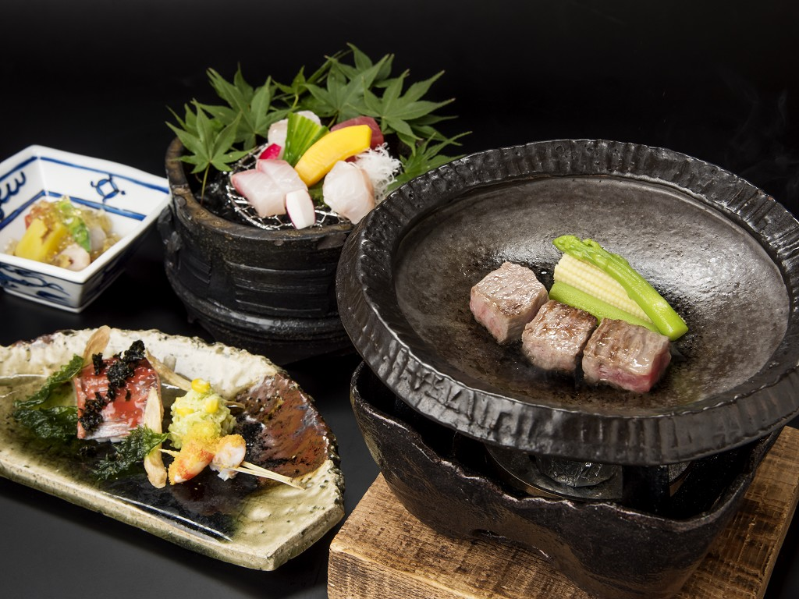
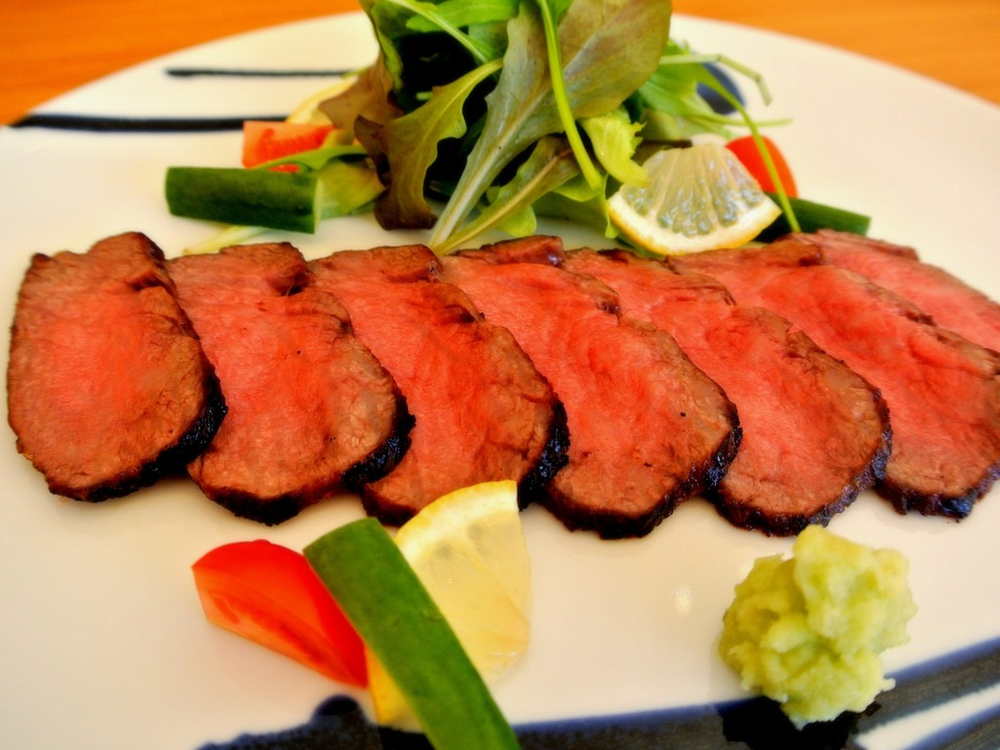
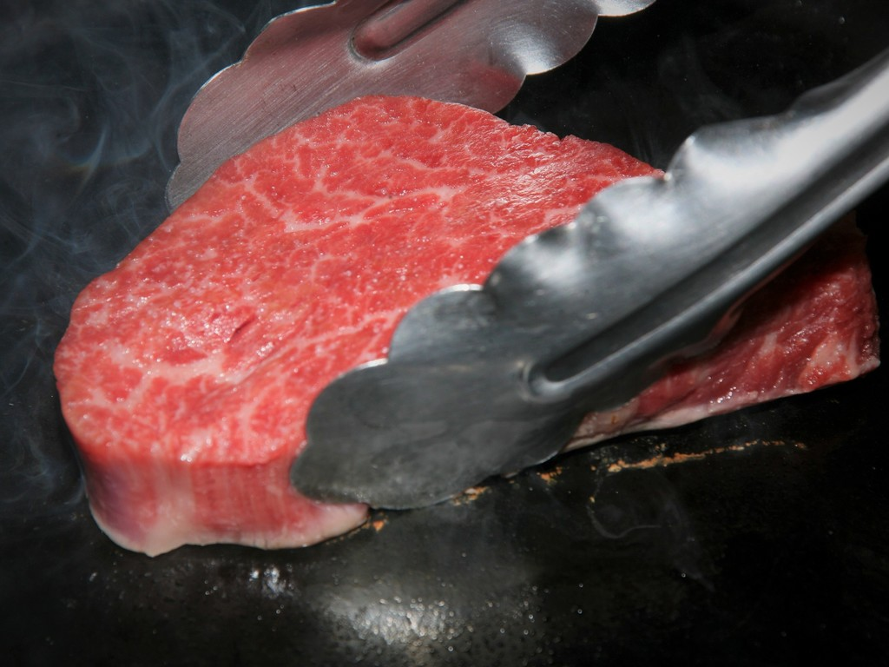

ようこそ
箱根の隠れ宿
温泉旅館
金乃竹
搭ノ澤へ
客室露天風呂付
全ての境界線を取り払えば そこに開放感がある。
ここは大人のための解放区。
昼の森に溶け込み 夜の森に潜む
大切な人と愛しい時を過ごす珠玉の隠れ宿
大人に許された開放感という贅沢を、大切な人と味わえる旅館をつくりたくて、
箱根 塔ノ澤の森に「金乃竹 塔ノ澤」をオープンしました。
そこは、渓谷に架かる吊り橋を渡り、
自然の奏でる音色が日頃の喧噪を洗い流してくれる場所。
森が二人を包み、ゆっくりとした時間で五感を優しく満たしてくれます。
どうぞ、大切な人との開放感という贅沢を、
四季折々の自然を愉しみながら
この旅館で味わっていただければと思います。
おすすめプラン

[季節の懐石スタンダードプラン]
国産黒毛和牛の陶板焼付き。旬の風
情を愉しむ懐石料理に舌鼓
料金：41,800円〜
1泊2食付のスタンダードプランです。
初めて「金乃竹 塔ノ澤」をご利用され
る方、どのプランにしようか迷われまし
たら、こちらがお薦めです。「地場」の
海と山の幸をふんだんに活かし、「旬」
の味覚を織り込んだ料理を、心ゆくまで
味わっていただける懐石です。
客室の露天風呂で極上の癒しをご堪能下
さい。

[和牛懐石プラン]
国産黒毛和牛をたっぷり愉しむ
料金：41,800円〜
旅先での食事は、「和食」のバランスの
良い会席料理も美味しいけど、やっぱり
お肉でお腹いっぱいになりたい、という
お客様に応えて誕生しました。お肉
尽くしのご夕食は、お肉好きな方ならき
っとご満足いただけるはず。
国産黒毛和牛の贅沢な味わいをお愉しみ
いただける、当館自慢のプランです。

国産黒毛和牛フィレ炙り焼きも堪能
[新・特選和牛懐石プラン]
料金：46,200円〜
厳選された国産黒毛和牛の良質な部位を
お愉しみいただけるプランがこちらの
「新・特選和牛懐石プラン」です。通
常の「和牛懐石プラン」のメイン料理で
ある陶板焼きのお肉を、サーロインから
A5ランク国産黒毛和牛のフィレ肉にア
ップグレード。
◇ ご予約内容の確認・変更・取消
◇ お客様登録情報の確認・変更
お部屋情報
| お部屋タイプ | フロア | 広さ | 露天タイプ | ベッド | ソファーベッド | 料金目安（税抜） |
| 空 SORA | 4F C.F. | 114~120㎡ | 帝 | 2 | 1 | 60,000円~ |
| 雲 KUMO | 4F C.F> | 68~70㎡ | 帝 | 2 | 1 | 50,000円~ |
| 光 HIKARI | 2F | 71~75㎡
94㎡ | 帝 | 2
2 | 1
1 | 46,000円~
50,000円~ |
| 雫 SHIZUKU | 1F | 57~70㎡
78~81㎡ | 御影 | 2
2 | 1
1 | 46,000円~
50,000円~ |
| 竹 TAKE | 2F
1F | 60~72㎡ | 帝
御影 | 2 | - | 42,000円~ |
| 星 HOSHI | 2F | 66㎡ | 帝 | 2 | - | 38,000円~ |
| 月 TSUKI | 1F | 70㎡ | 御影 | 2 | - | 38,000円~ |
| 遥 HARUKA | 2F | 58~60㎡ | 帝 | 2 | - | 38,000円~ |